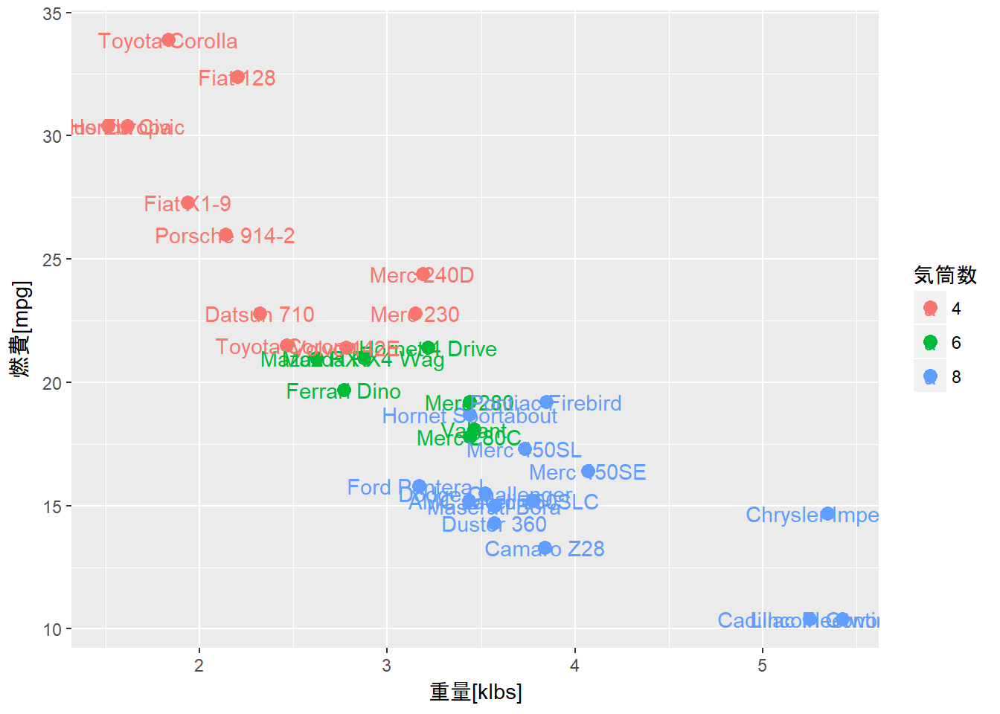
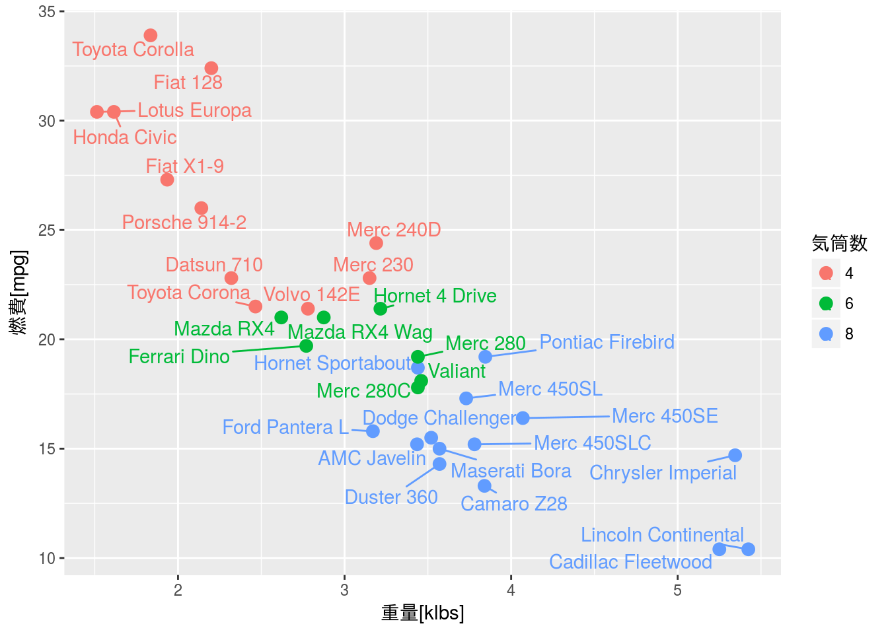
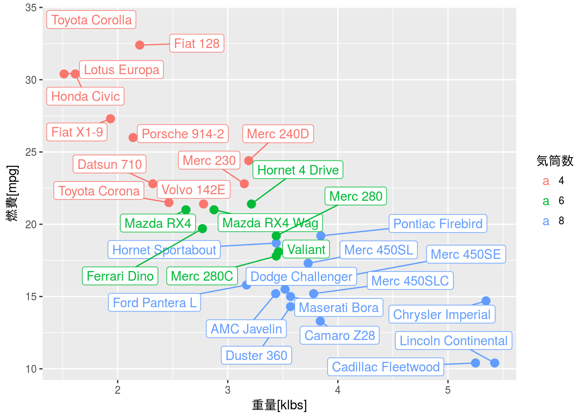
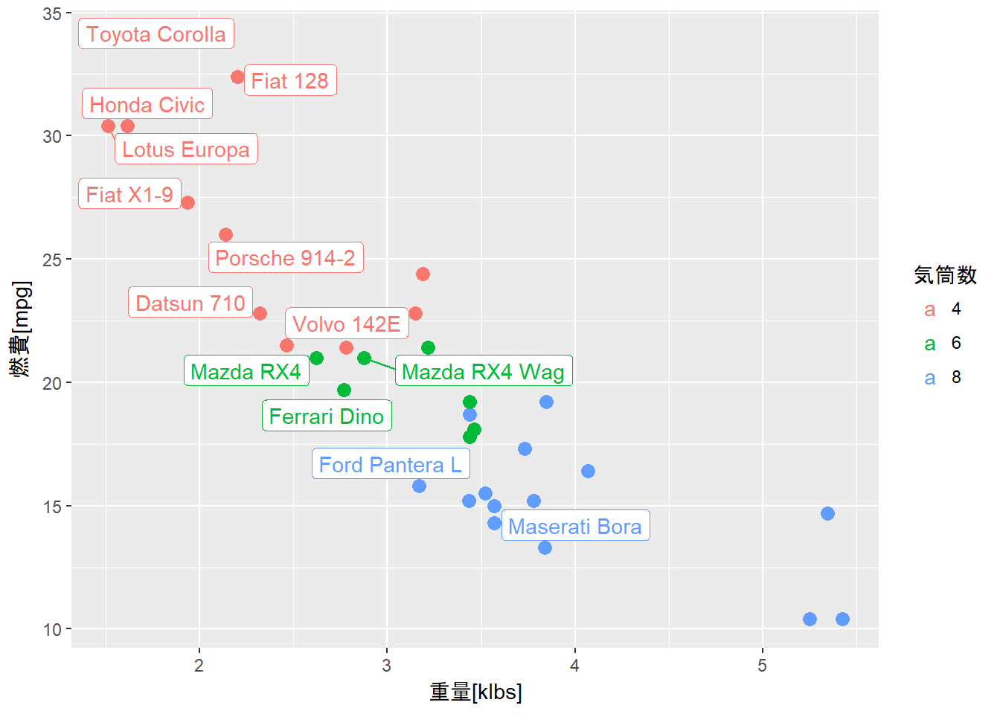

ラベルが重ならないように描画する
ggplot2::text関数やggplot2::label関数はデフォルトでデータの位置にラベルテキストを表示します。そのためデータの数が多い場合や、データの位置集まっているような場合にはラベルテキストが下図のように重なってしまい、読み取ることができません。

そこで、このような状態を解決するのに利用したいのがデータの位置に応じてラベルテキストを自動的に配置してくれるggrepelパッケージです。
必要なパッケージ
本ページのコードを実行するには標準パッケージ以外に以下の追加パッケージを読み込んでおく必要があります。
| Package | Description |
|---|---|
| ggrepel | Repulsive Text and Label Geoms for ‘ggplot2’ |
| tidyverse | Easily Install and Load the ‘Tidyverse’ |
描画例
ggrepel::geom_text_repel
テキスト（ラベル）を表示するにはggrepel::geom_text_repel関数を用います。基本的なパラメータ指定はggplot2::geom_textと同じですので既存のコードを簡単に置き換えることが可能です。
mtcars %>%
ggplot2::ggplot(ggplot2::aes(x = wt, y = mpg, colour = as.factor(cyl))) +
ggplot2::geom_point(size = 3) +
ggrepel::geom_text_repel(ggplot2::aes(label = rownames(.))) +
ggplot2::labs(x = "重量[klbs]", y = "燃費[mpg]", colour = "気筒数")
ggrepel::geom_label_repel
ラベル（背景枠のついたテキスト）を表示する場合はggrepel::geom_label_repel関数を用います。こちらもggrepel::geom_text_repel関数と同様でggplot2::geom_label関数と基本的なパラメータに互換性がありますので同様に使うことが可能です。
mtcars %>%
ggplot2::ggplot(ggplot2::aes(x = wt, y = mpg, colour = as.factor(cyl))) +
ggplot2::geom_point(size = 3) +
ggrepel::geom_label_repel(ggplot2::aes(label = rownames(.))) +
ggplot2::labs(x = "重量[klbs]", y = "燃費[mpg]", colour = "気筒数")
条件付き描画
外れ値などある条件を満たしたデータのみラベルテキストを表示したい場合が多々あります。このような場合はdplyrパッケージにあるdplyr::case_when関数を用いてラベル側を加工しておくことで描画が可能になります。
例えば、mtcarsデータセットにおいてマニュアル車のみラベルを表示する場合は以下のように指定することで条件を満たしたデータのみにラベルを表示することが可能になります。
mtcars %>%
tibble::rownames_to_column("name") %>%
dplyr::mutate(label_text = dplyr::case_when(am == 1 ~ name, TRUE ~ "")) %>%
ggplot2::ggplot(ggplot2::aes(x = wt, y = mpg, colour = as.factor(cyl))) +
ggplot2::geom_point(size = 3) +
ggrepel::geom_label_repel(ggplot2::aes(label = label_text)) +
ggplot2::labs(x = "重量[klbs]", y = "燃費[mpg]", colour = "気筒数")
参考資料
ggrepelPackage Vignettes- ggplot2 パッケージによる可視化の際のラベルの重なりを防ぐ
- geom_pointへのテキストやラベルの付与に便利な「ggrepel」パッケージ
- dplyrのベクトル要素変換用関数3種
- 列の変換 - mutate関数
- dplyrのVectorized Functionsについて
 CC BY-NC-SA 4.0 , Sampo Suzuki [2018-05-30 17:31(JST)]
CC BY-NC-SA 4.0 , Sampo Suzuki [2018-05-30 17:31(JST)]